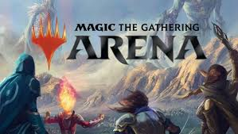

| rank | cover | title | rating | review | 1 | |
risk of rain 2 | 9.5/10 | i love finding the secrets and new powerful items | 2 | |
atack on tittan revolution | 8/10 | slay titans | 3 | |
minecraft dungeons | 8/10 | explore the maps clear dungeons | 4 |  | magic the gathering arena | 6/10 | just magic the gathering but online and it is easer to find oponents | 5 | |
marvel rivals | 5/10 | the only reason i play is because i can play with my feinds |